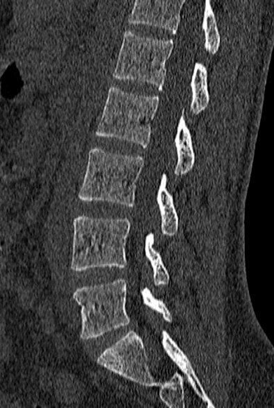

Normal lumbar spine CT (sagittal, bone window)مفراس فقرات قطنية طبيعي (سهمي، نافذة العظم)🟢 Normal · الصورة الطبيعية

الحالة: مقطع سهمي (sagittal) طبيعي للفقرات القطنية بنافذة العظم، نقارن به حالات الفقرات.
ما يُرى فيها: أجسام الفقرات مستطيلة ومصطفّة على خط منتظم، والمسافات بين الأقراص متساوية، والقناة الشوكية واسعة خلفها.
الوضعية: Sagittal · Bone window